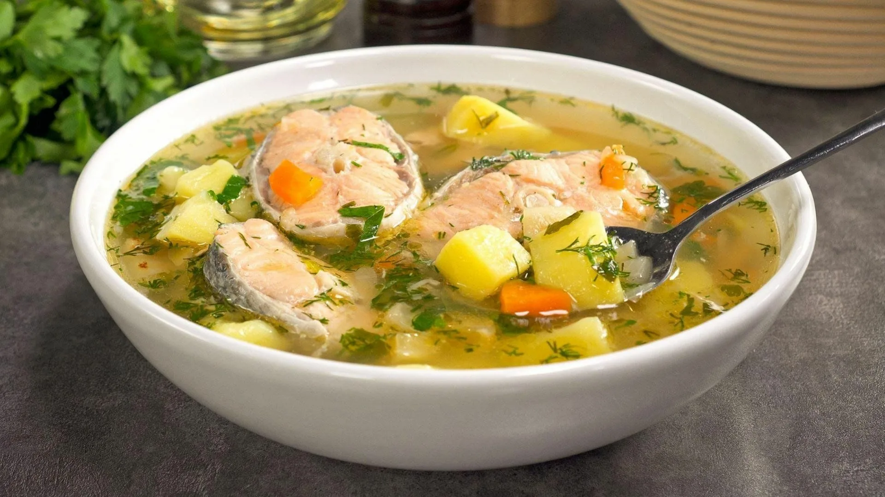

| Название блюда | Рейтинг | Рецепт (ссылка) | Фото | Уха | 9/10 | Рецепт ухи по-царски |
| Суп из рыбы | 10/10 | Суп из рыбы рецепт простой и вкусный |  |
| Картофель пюре | 10/10 | Картофель пюре рецепт с молоком и маслом | |
| Перец фаршированный | 2/10 | Перец фаршированный мясом и рисом рецепт классический | |